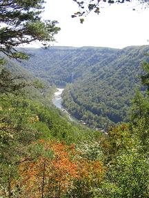

"The Bridge to Terrorbithia"
|
American Society of Civil Engineers
|
Through a series of tremendous strokes of luck, I managed to join virginia Tech's student chapter of the American Society of Civil Engineers just in time to join their mailing list in just enough time to recieve an email saying that the very next day was the last day to sign up for this amazing trip! It was really really really cool because... well, I'll just let you find out as the trip progressed. Suffice to say, there was no way I was going to miss this trip if I had anything to say about it. |
Jump to a Section:
Visitor's Center | Side of the Road |
The Flip Side
Section 1:
|
||
 |
I was going to take some pictures of the road and the bridge on the way up, but my camera was in the trunk. So we're just jumping right in here. OK, so we arrived at the gorge after a 2 hour trip down from Blacksburg. On the way, one of the 5 cars (rentals and cars from the VT Motor Pool) got pulled over for speeding. Same thing (different car) on the way back. Interesting to note. So anyway, this is the wonderous New River Gorge. The New is said to be, ironically, one of the oldest rivers in North America. A hundred years ago, when coal mining was really big in this area, this picture would probably have contained no trees whatsoever, as an interesting side note. |
|
Anyway, this little barely-one-lane-wide bridge used to be the only way to get across the gorge. With all the switchbacks, it'd take a good 45 minutes to get across. Then, in the 1970s, they decided to put through the "Appalachian Corridor," a 4 lane, high speed, well graded highway through the mountainous heartland of West Virginia. This road obviously wasn't going to cut it. So they built... |
||
Visitor's Center | Side of the Road | The Flip Side
Click here to return to the VT experience.
{kind=link}
{kind=link}
{kind=link}
{kind=link}
{kind=link}